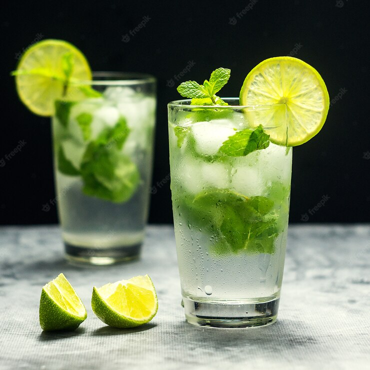

Mojito Recipe

Mojito Cocktail with lime and mint in glass on a grey stone square
For those who drinks for laughter and for friendships, and for those who drinks for love and passion
Ingredients
- 10 fresh mint leaves
- 1/2 medium lime, cut into 3 wedges, divided
- 2 tablespoons white sugar, or to taste
- 1 cupe ice cubes, or as needed
- 1.5 fluid ounces white rum
- 1/2 cup club soda, or as needed
Directions
- Place mint leaves and 1 lime wedge into a sturdy glass. Use a muddler
and crush to release mint oils and lime juice.
- Add remaining lime wedges and 2 tablespoons sugar, and muddle
again to release the lime juice. Do not strain the mixture.
- Fill the glass almost to the top with ice. Pour in rum and fill
the glass with club soda.
- Stir, taste, and add more sugar if desired.